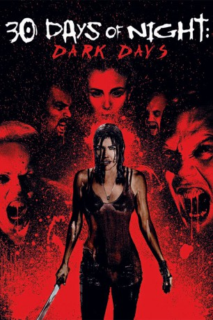

#3719 30 Days of Night: Dark Days
 
 IMDB-Wertung: 4.4 / 10
IMDB-Wertung: 4.4 / 10  Tomatometer: 17
Tomatometer: 17  Metascore: 0
Metascore: 0 
Fast ein Jahr ist vergangen, seit Vampire die Ortschaft Barrow, in Alaska, stark dezimiert haben. Stella, die um ihren getöteten Mann trauert, ist um die ganze Welt gereist, um andere Menschen von der Existenz der Vampire zu überzeugen. Als eine Gruppe verlorener Seelen ihr die Chance bietet, sich an der Vampirkönigin zu rächen, schließt Stella sich ihnen an, um zu verhindern, dass das Böse erneut zuschlägt.
Jahr: 2010
Dauer: 92 Minuten
FSK: 18
Land: USA Studio: Sony Pictures Home EntertainmentTonspuren: DTS - ,
Untertitel: Deutsch,
Auflösung: 1080p (1920x1040) Größe: 5775 MB
Genre: Thriller, Horror
Regisseur: Ben Ketai
Drehbuch: Gary Hawkins
Soundtrack:
Darsteller:
Datei: X:\FSK18-Collections\30 Days of Night\30 Days of Night Dark Days (2010, FSK18, 1920x1040).mkv seit 26.05.2016
Festplatte: FSK18
 Alle Filme aus Gruppe 'FSK18-Collections\30 Days of Night'
Alle Filme aus Gruppe 'FSK18-Collections\30 Days of Night'